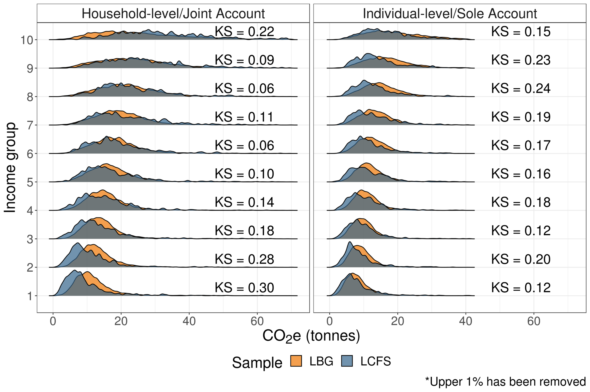

![]()

Consumption-based household emissions
There are three methodological ways which we can choose to estimate consumption-based carbon emission. - Linking household survey data to MIRO extended table that include emission factors - Linking activity survey data to specific activities that generate known physical quantities of emissions - First option with non-survey data, like total annual transaction data for each individual
Now lets consider third option which was offered by this paper: Estimating carbon footprints from large scale financial transaction data.
What this paper offers
This paper introduced a new way for computation of consumption-based CF (carbon multipliers ) through integrating financial transactions, UK MIRO tables, and COICOP categories. They applied their method to a sample population of 100,000 customers with about 62 million transactions in 2018 of Lloyds Banking Group in UK, and compared the result with survey-based CF method modeled on household expenditure. They numbered the benefits of their methods, such as Big Data-intensity, scalability, objectivity, and longitudinal view as opposed to point-in-time snapshot of carbon emissions.
What are the benefits?
They argue that leveraging CF calculators with transaction data have multiple benefits over participatory CF methodologies like survey and physical based methods, such as better representativeness of the population (big data volume vs complex survey design), longitudinal vs snapshot view of carbon emissions, and objective vs self-reported data. They emphasized the significance of regulated and anonymized data donation and transparency from individuals and commercial organizations for the purpose of carbon accounting and climate change policy for the benefits of society.
Some background knowledge for input-output regional model
input-output tables are simply bunch of linear equations that capture inter- and intraindustry relationship in a geography, like in a country. Below figure shows simple table structure for input-output model.

you can find some useful information about input-output methodology and historical development in this book: Input-Output Analysis: Foundations and Extensions.